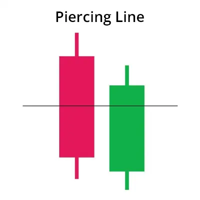
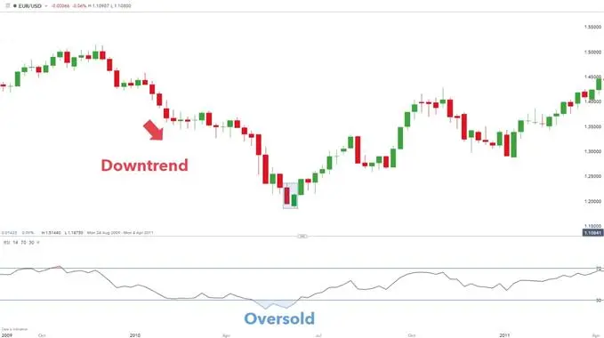

पीयर्सिंग लाइन पैटर्न एक बीयरिश रिवर्सल कैंडलस्टिक पैटर्न है जो एक डाउनट्रेंड के नीचे देखा जाता है। यह अक्सर एक ट्रेंड रिवर्सल को प्रेरित करता है क्योंकि बुल्स बाजार में प्रवेश करते हैं और मूल्यों को ऊपर धकेलते हैं।
पीयर्सिंग पैटर्न में दो कैंडलस्टिक्स शामिल होते हैं, जिसमें दूसरा बुलिश कैंडलस्टिक पहले बीयरिश कैंडलस्टिक से कम ओपन करता है। इसके बाद खरीदारों के दबाव से मूल्यों को ऊपर ले जाया जाता है ताकि बीयरिश कैंडल के शरीर के 50% से ऊपर बंद किया जा सके।
नीचे दी गई तस्वीर पीयर्सिंग पैटर्न के दो कैंडलस्टिक्स की जटिलताओं को हाइलाइट करती है:
| HOW TO IDENTIFY A PIERCING PATTERN ON FOREX CHARTS? |
Characteristics of a piercing pattern:
What does this tell traders?
Advantages of trading with the bullish engulfing candle:
| TRADING WITH THE PIERCING LINE PATTERN: TOP TIPS & STRATEGIES |

ऊपर दिखाए गए साप्ताहिक EUR/USD चार्ट में नीले रंग से हाइलाइट किए गए पियर्सिंग पैटर्न की उपस्थिति है। इस पैटर्न से पहले कम होते निम्नतम और कम होते ऊपरी उच्चतमों के द्वारा मजबूत डाउनट्रेंड दर्शाया गया है। यह उदाहरण डाउनट्रेंड की निर्धारण के लिए मूल्य क्रिया का उपयोग दर्शाता है, हालांकि, ट्रेडर आमतौर पर पुष्टि के लिए एक तकनीकी संकेतक जैसे चलती मात्रा का उपयोग पसंद करते हैं (मूल्य लंबे समय तक चलती मात्रा से ऊपर होना चाहिए)।
पियर्सिंग पैटर्न में प्रवेश करने से पहले इसे अधिक सत्यापन की आवश्यकता होती है। इस उदाहरण में, एक उल्टी चाल के विस्तार के सत्यापन के रूप में RSI ऑसिलेटर का उपयोग किया गया है। चार्ट से, RSI में एक ओवरसोल्ड सिग्नल निर्दिष्ट करता है जो पियर्सिंग पैटर्न की वैधता को मजबूती देता है।
स्टॉप स्तर बुलिश पियर्सिंग पैटर्न के निकटतम नीचे (बुलिश पियर्सिंग पैटर्न की बुलिश मोमबत्ती के नीचे लो) रखे जा सकते हैं, जबकि टेक प्रॉफिट (सीमित) फिबोनाची एक्सटेंशन या मूल्य क्रिया का उपयोग करके पहचाना जा सकता है।